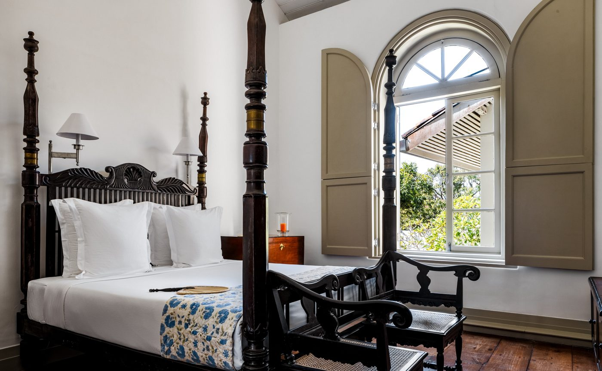

Amangalla occupies a house the Dutch built for their governor in 1684. The best thing it does now begins at first light, several kilometres away, on an island in a rice field.
The Sattva Vihara retreat starts before the heat does. A short drive out of Galle, then a paddy island, rice coming up green on every side. The name translates as retreat of purity and balance. It runs year round and takes half a day.
A sound bath follows, Tibetan singing bowls laid over whatever the fields are doing at that hour. Then a ninety-minute signature massage for two. Breakfast is Sri Lankan and unhurried. The morning finishes at Yatagala, one of the oldest temples in the south.
Yatagala is 120 steps up through jungle. At the top there is a rock temple roughly 1,200 years old, an ancient Bo tree and a meditation cave cut into the stone. It is thirty minutes from the hotel and it is not on most itineraries.
The house
Amangalla stands at 10 Church Street, inside the ramparts of Galle Fort. The oldest part of the building went up in 1684 to house the Dutch governor and his staff, and the complex was finished in 1715. In 1865 it opened as the New Oriental Hotel, taking European passengers off the ships at Galle harbour.
Aman took it on and kept the bones. Rooms have the original wooden floors, high sash windows and four-poster beds. The Great Hall still goes by its Dutch name, Zaal, and still works as lounge, living room and bar, with live music most evenings.

A room at Amangalla, Galle Fort · Courtesy of Aman
Rice and curry has been served in the Dining Room and on the Veranda every evening for more than 150 years, in one form or another. The menu changes nightly. Afternoon tea comes with scones, clotted cream made in the kitchen and strawberry jam from the Nuwara Eliya highlands.
The Veranda runs the length of the house along Church Street. Breakfast there is hoppers, taken while the Fort wakes up around you. The Sunset Balcony sits on the top floor with westerly views over the terracotta roofs and out to sea.
The spa
The Aman Spa here was built for a slower idea of taking the waters. Five treatment rooms, candlelit and high ceilinged under the archways. Two hydrotherapy suites, each with a warm massage pool, sauna, steam room and cold plunge.
There is an Ayurvedic physician in house. The three-night Ayurveda Experience opens with a consultation and builds a plan from there, with daily yoga and a sixty-minute treatment each day. The seven-night version adds the temples and a tea plantation. There is also a yoga pavilion, a barbershop, a nail salon and a 21-metre pool.
Three hundred and forty years of continuous occupation, and the house still knows what to do with a morning.
The Splendid EditOutside
Galle Fort dates to 1588 and holds its own weather. Narrow streets, Dutch and British facades under terracotta tiles, churches, boutiques, a mosque, a cricket field. Amangalla’s guides walk it, finishing at the lighthouse on the ramparts where people fly kites at sunset.
The Bawa tour goes ninety minutes north to Bentota, to Lunuganga, Geoffrey Bawa’s house and the fullest statement of his tropical modernism. It takes in Brief Garden too, the country house of his brother Bevis, a landscape architect. Bawa worked for nearly seven decades and most of modern Sri Lankan building runs back through him.
Bicycles, tennis, morning yoga in the Garden Pavilion and afternoon tea are all included. Amanwella is down the coast at Tangalle, and the Fort & Beach journey pairs the two for stays of two nights or more.
Retreat details, spa and dining information, experience descriptions and transfer times from Amangalla and Aman, aman.com, accessed 12 October 2026. Construction dates for the 1684 Dutch building and the 1865 opening of the New Oriental Hotel from published records for the property. No remarks in this piece are attributed to any named individual.
Photography courtesy of Aman — © Aman, Amangalla